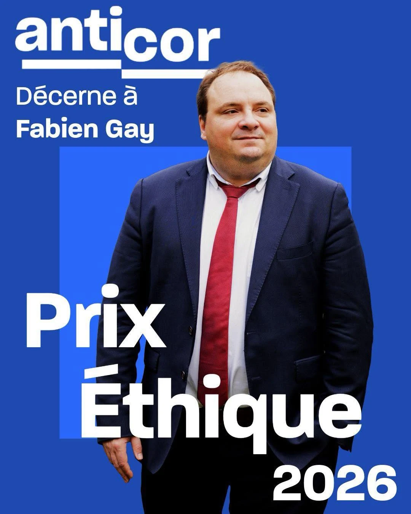

Publication relayée par le PCF 79
Fabien Gay reçoit le Prix Éthique d’Anticor pour le rapport sur les aides publiques aux entreprises
Date de mise à jour indiquée par Facebook · 1 février 2026
Texte de la publication · Fabien Gay
Ce soir, je reçois le Prix Éthique de l’association Anticor, qui lutte contre la corruption et pour l’éthique en politique lors de la 18ᵉ cérémonie, au Théâtre de la Concorde à Paris.
Ce prix récompense notre rapport sur les aides publiques aux entreprises
Ce titre, je le partage avec l’ensemble du groupe communiste au Sénat, avec toute la commission d’enquête – et en particulier son président Olivier Rietmann –, avec l’administration du Sénat, avec toute mon équipe de collaborateurs et collaboratrices, et bien sûr avec celles et ceux qui luttent au quotidien, salarié·e·s et syndicalistes, dans leurs entreprises pour la justice sociale, écologique et fiscale.

Sources
Fabien Gay · publication relayée par le PCF 79 · bibliothèque Facebook · AR-0002-FB-00883
À lire aussi · Le PCF demande de conditionner les aides publiques aux grandes entreprises